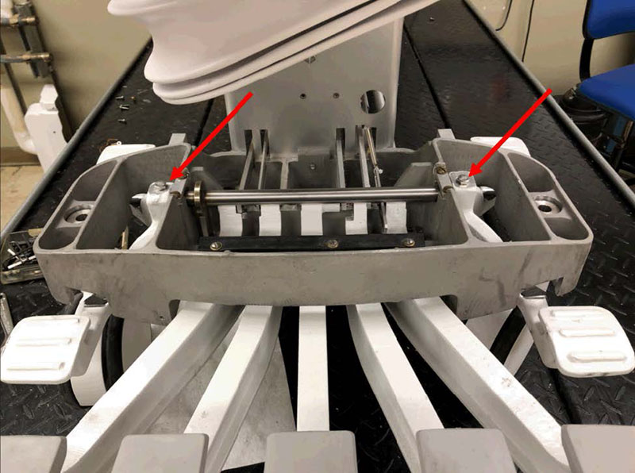
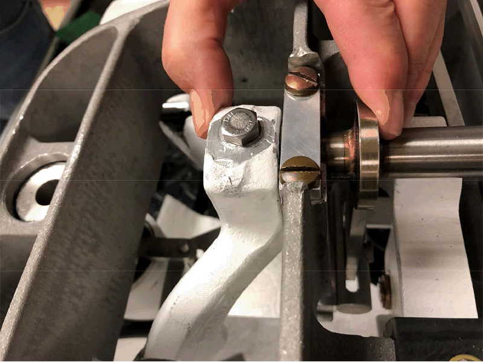
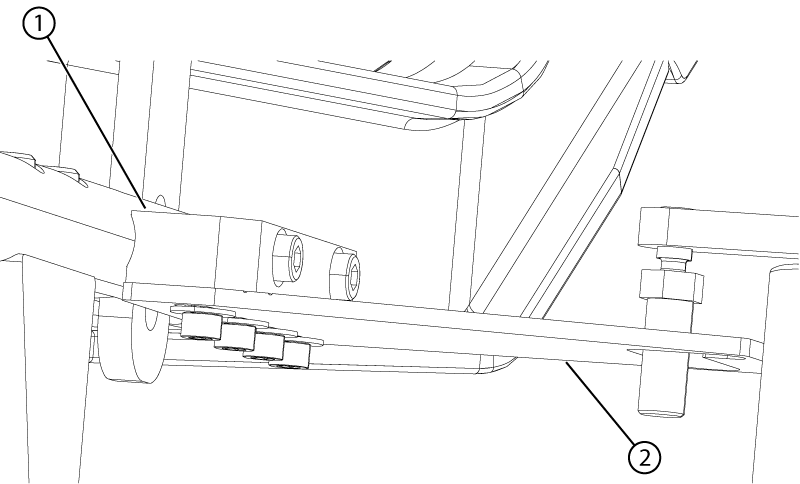
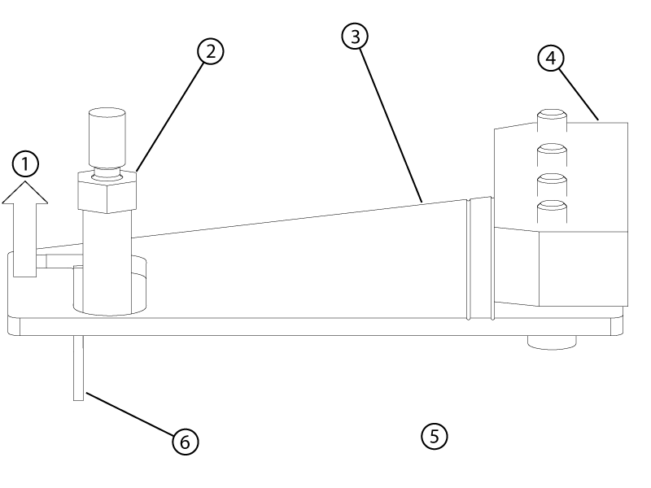

Replacing the left rear brake link
Procedure
- Loosen the bolts securing the brake pedals to the cross bar of the pedal rod assembly.
Figure 1. Pedal rod bolts

- Squeeze the left pedal and brake plate extension tight against the table frame.
Figure 2. Pedal rod adjustment

- Tighten the left-side bolt to secure the pedal to the pedal rod.
- Push the right brake pedal to the table frame to eliminate any gap.
- Tighten the right-side bolt to secure the pedal to the pedal rod.
- Remove the four screws and four washesrs securing the left rear brake link plate to the mounting block.note: Discard the four removed screws.
Figure 3. Left rear brake link plate mounting

1 Mounting block 2 Link - Apply Loctite to the four new screws.
- Install the new link plate and loosely install the four new screws and four new washers.note: Allow play in the link plate for fine adjustments in the following steps.
- Align the brake link plate as follows:
Figure 4. Left rear link alignment (view from the top)

1 Mounting block 2 Scribe line 3 Link plate 4 Handle side 5 Shim 6 Caster pin 7 Dock side - Push the brake link plate towards the rear (handle end) of the table until it stops.
Figure 5. Slot position B

- Lift up on the end of the brake linkage plate until it is horizontal to the ground. Continue holding everything in position until the screws are tightened.
Figure 6. Left rear link alignment isometric view

1 Lift up 2 Caster pin 3 Left rear link 4 Mounting block 5 Handle end of the table 6 Shim - Make sure the caster pin is in the neutral position.
- Make sure that the brake link plate and the caster pin are 2mm apart using shim (5814640).
- Make sure that the scribe line on the brake link plate is parallel with the mounting block edge.
- Push the brake link plate towards the rear (handle end) of the table until it stops.
- Tighten the four screws securing the plate to the mounting block.
- Make sure the link plate and the caster pin are still 2mm apart using the shim and that the link plate is rigid.